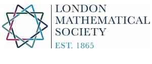
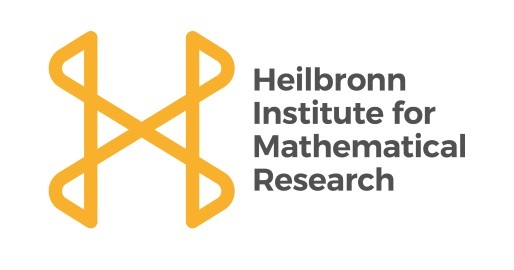

UK Easter Probability Meeting 2018
A workshop about:
Random Dynamics and Other Recent Developments
April 9th-13th, University Of Sheffield
For all enquiries relating to the conference, please contact us by email at
The local organizers are:
If you are due reimbursement from the conference, you can use this form.
Please attach original tickets and receipts, and send a paper copy of the form to:
Dr Nic Freeman, School of Mathematics and Statistics, Hicks Building, Sheffield, S3 7RH, England.
All claims must reach us by May 14th.
We are grateful for support from E.P.S.R.C., the London Mathematical Society, the Heilbronn Inistitute for Mathematical Research, and the Applied Probability Trust.

